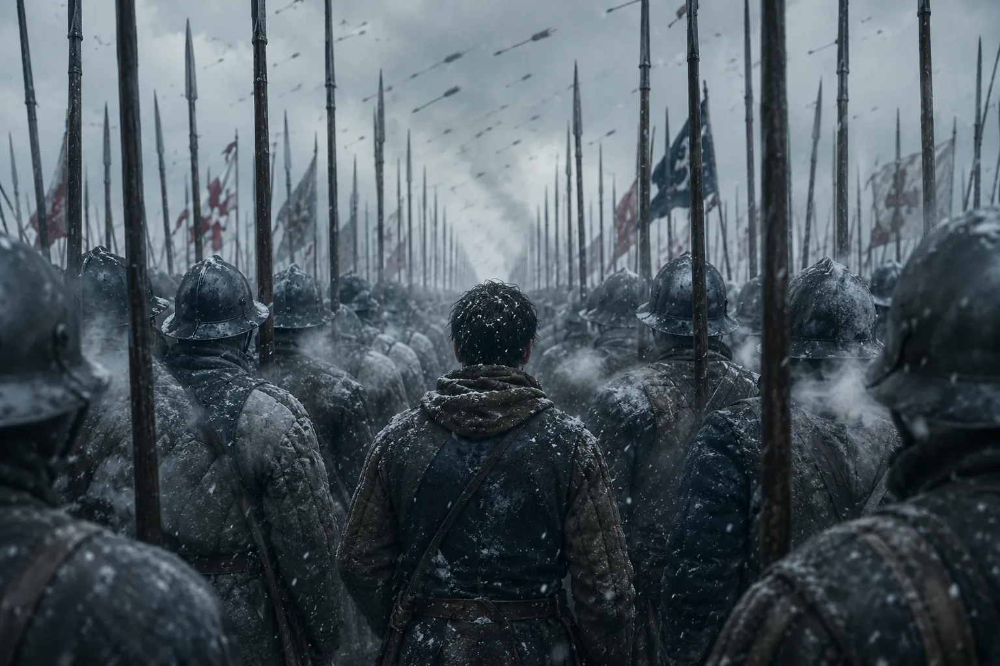
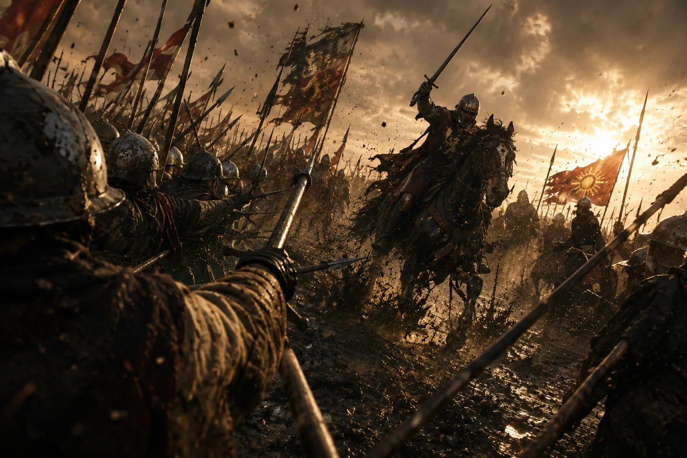
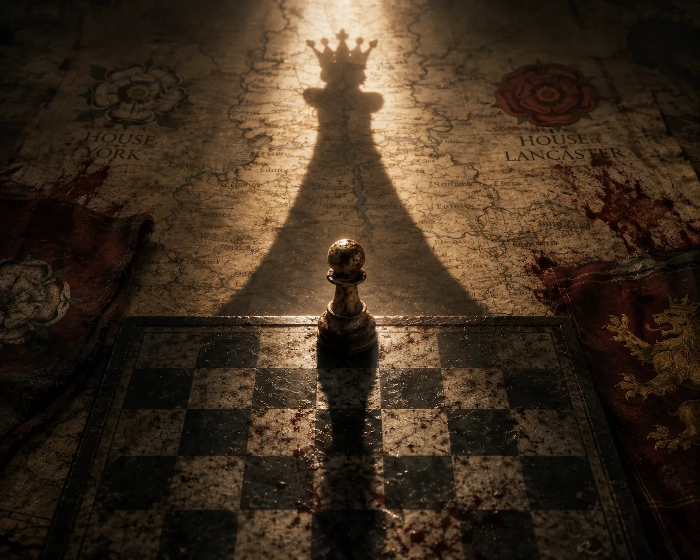
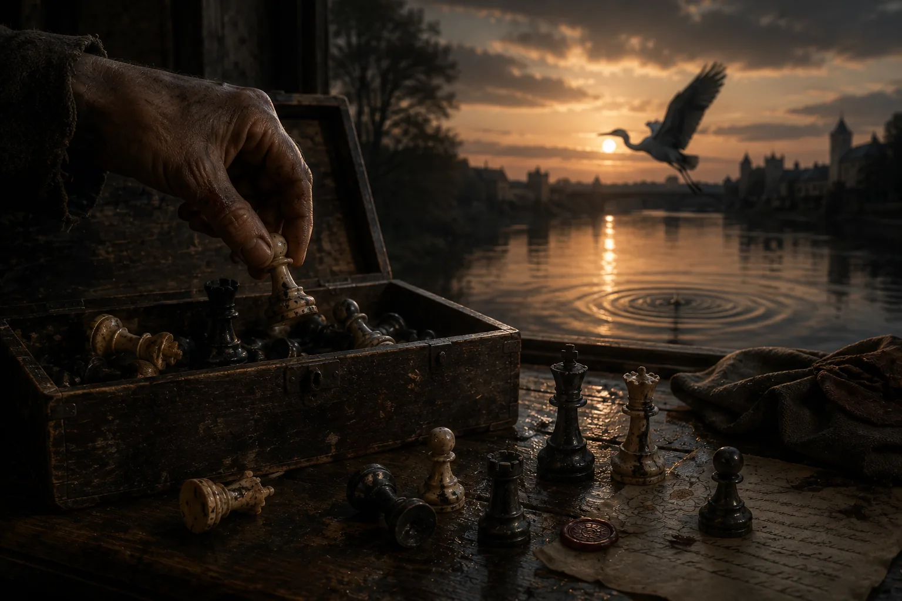

人生这东西，往往不像舞台，倒更像一盘棋——每一枚棋子都被那看不见却从不停歇的力量推着向前。
我初登陶顿冻硬的土地时，只有十七岁，手里一杆木柄长枪，肺里装着整个冬天。雪像一块冰冷的祭坛布铺在大地上，几千人的呼吸升起，成一面面苍白的旗。你若现在问我当年信什么，我会说：我信方阵——一格接一格的义务叠成的方阵——因为卒受的教育就是向前走，当箭矢像一炷炷黑色的香升上天空时，不许左看，不许右看，不许回头。我们列队而立，白玫瑰以针线绣在衣上，在蓝天底下灼灼如烧；远处，我看着那支暗色的军队围着一处空位集结——兰开斯特的亨利，那位被内心风暴反复碾压的可怜国王；而他家族真正的暴风雨，佩着红玫瑰，带着安茹的玛格丽特那母狮般的铁腕。然后我们沿着棋盘向下走，一步，又一步，雪粘在胫甲上，雪轻轻地落。

如吟游诗人后来所唱，陶顿把约克的爱德华推上了王座；可我记得的，只是士兵们怎样站着冻死。战后，我们按行列收殓阵亡者：他们僵硬、无名、面目难辨，只剩衣上的纹章还可认。爱德华四世加冕，王国把我们派往城墙与边境——派往卢德洛。在那里，人们的眼睛和当地的石头一样冷；在那里，我的手忘掉了颤抖，学会了军营里的冬活：擦油、磨石、操练、祈祷，一天，又一天，又一天。
流言在回廊里穿行，像个狡黠的浪人，低声说沃里克——我们的铁勋爵，人称"造王者"的那位——已经与自己的王为敌。在小礼拜堂里，我听见上帝的老仆人们称量正义，像屠夫称量一条羊腿；而在窄海之外，玛格丽特正聚拢船只、阴影，和她流亡在外的儿子。我心里明白——如同每一枚卒受教要明白的那样——开局是承诺，中局终将背叛它。
巴内特的雾贴着地面滚来，仿佛天空也俯下身来，想看个究竟。我们在错认中杀戮，朋友杀向朋友，誓言对上誓言，军旗藏进本该效忠于它们的目光之外。沃里克坠马时，时间似乎漏跳了一拍。我看见他的马挣扎了一下，看见他跌进马蹄扬起的尘土里，天真地想：少了这样一枚重子，棋盘恐怕不知道该怎么再当一盘棋。然后我们开始奔逃，巴内特结束了，不久图克斯伯里也结束了，玛格丽特的事业从英格兰褪去，像一面在雨里挂得太久的旗褪尽颜色。而我仍在以一枚卒唯一会的方式向前走——我的升迁不靠荣耀的梦，靠的是活下来，靠的是一个男人与自己呼吸之间与日俱增的熟稔。
有些傍晚，我以为我们赢了，和平是有味道的——面包、蜂蜜酒、羊肉和睡眠，那种正派而家常的味道；也有些早晨，我知道所谓和平，不过是弥撒的钟声与点兵的钟声之间那一丁点距离。我们相信国王的第二次在位能够长久，命运却派了拿锤子的人从底下动手：爱德华早逝，格洛斯特——理查，浑身是神经和铁——行动起来，仿佛整张棋盘向他倾斜。幼王的影子拉长，随即消失；理查戴上王冠；许多从陶顿起就为约克而战的人感到颈后一股凉风，瑟缩着，转向最后一线希望——亨利·都铎，那条蛰伏在威尔士巢穴里的龙。
博斯沃思的黎明带着一种红金色的光，既不家常，也不血腥，田野发烧似的蒸腾。理查的战线牢牢扼住山脊，都铎的人移动起来带着一种清亮——像在烛光下学会了棋盘、如今头一回在太阳底下看清它的棋手。我的长枪被破布和老旧的护身咒语磨得比自己的掌心还光滑；我与一队只借来一天名字的人并肩站在队列中央——诺丁汉的约翰，补锅匠的儿子威尔——知道到中午，我们也许就会忘掉这些名字，或把它们还回寂静。当理查策马冲出，笔直地、狠狠地扑向亨利的王旗，我感到整片战场跳过了一格——我跟着他冲，因为队列在推我，也因为勇气往往是惯性的另一个名字。我们砍杀，再砍杀，直到空气变得黏稠——然后合围收拢，我听见他呼喊一匹新马。就在那时我明白了：国王，不过是获准把欲望说出口的凡人……

我说不清王冠是何时离开他的头颅、走进历史的，只知道红龙在天空中又爬高了一点，棋盘上每一枚棋子都向后退了半步——我们抵达了这盘棋假装是终局的时刻。然而就在亨利·都铎站得笔直、一脸凡人相的时候，就在贵族们重新计算自家谱系的时候，我感到一件微小而确切的事：我已经走到了棋盘的彼端，却不知道身后那些格子早已加在一起，凑成了一生。
第八排。
他们告诉我——欢呼着，拍着我的背——我可以自己选，仿佛人生是一只珠宝匣，各式宝石等价陈列：十字、塔楼、头盔，或者王冠。教会用蜜糖般的辞令劝我，城堡透过总管发言，骑兵们唱起骑士精神的老歌，宫廷则低声念诵君王纵横四海的权柄。我犹豫了——对一枚卒来说，这很失体面，因为战场上，犹豫正是人送命的方式。可我忍不住在每一枚纹章里看见一部悲史，仿佛每一种位分里盛着的，只是滋味不同的悲哀。
最终我选了后。不为荣耀，为记忆——因为我见过一个女人用牙关咬住一个王国，后来失去了它，剩下的牙齿却还够她说话；也因为我想朝所有方向行走，想在我们苦难的每一道边上放一只手，无论多轻。我告诉你，那时升起的欢呼又甜又野，像大疫之后的第一场丰收。我在人群中穿行，带着一种奇异的轻——像一枚被从旧规则里拾起、放到重子中间的棋子；我并非王族，人们看我的眼神，却仿佛我能改变他们在秤上的分量……

……有一小段时间，我确实能。
将死。
后来的事，并不如传说许诺的那样。羊皮卷从王国各处递进来，火漆加热，再任它冷却，账目被鹅笔一划就自己改正了。我明白了王国永远带着细小的破损，修缮永无止境，像多雨之国一座礼拜堂的屋顶；我明白了共同体是一块每年春天都被雨水泡翘的棋盘，而像后那样行走，就是在一地细纹的国度上小心翼翼地移动。与此同时，新王一年年长大，终于合了脚；两朵玫瑰缠成一枚纹章，关于它的歌谣，让孩子们在睡梦中也变得勇敢……
我们说，仇恨已经了结，长久的和平已经开始——某种意义上，确实如此。可心脏记得大脑坚称已经忘掉的事。有些夜里我会醒来，凭两只脚跟顶脚尖的量法，记起一列横队精确的宽度；有些白天，一个寡妇眼里的神色，像一记长枪扫过我的胸口。我可以用一句话，免掉一层税、放下一柄剑；也可以用一阵沉默，容一个男人守着他的小偷小摸，好让他的孩子们有面包吃。这便是棋盘赠予那枚走到彼端而不肯逃走的棋子的权力。
可我必须告诉你真相。
某个秋天的傍晚，路过那座有人为理查的名字祈祷的小礼拜堂，我感到时间在四周晕开，仿佛世界从博斯沃思起就一直屏着呼吸，直到此刻才呼出来。我看见我们赢了，然而没有什么留得下来：国王和王后被更好或更差的继任者替换，主教换成更谙政治或更虔诚的主教，骑士换成骑着更漂亮马匹的骑士之子，车换成在风里越发斑驳的车，而卒，换成个子刚好够搬第一捆柴火的其他小卒。我看见那只大木箱的盖子被无形的手掀开，从骨子里感到我们终将全部回到里面，棋子们躺在一起，再无争执；然后在某个落雨的早晨，某个孩子会嚷着要下一盘棋，历史会把它的棋子重新摆上羊皮纸，而我们又将客客气气地，开始互相屠戮。
我并不轻蔑这个。如果我能对陶顿的少年们说些什么——上帝知道，我在梦里把他们集合过多少回、按行按列清点过多少回——我会说：第八排不是一架逃出世界边界的梯子，只是一口你必须更妥帖地挂在颈间的钟；将死不是最后的话，它只是必须背负的重量，是时代与时代之间那足以令人窒息的寂静……
如今我比传说更老了，身体里带着那盘旧棋的天气：陶顿的雪在我睫毛上，巴内特的雾在我肺里，博斯沃思的琥珀在我眼中。现在想起玛格丽特，我看见的不是一个怒气冲天的复仇者，而一个背朝着大海的母亲；想起理查，看见的不是一个怪物，而一个直到最后一个马蹄印被水灌满也不肯让出自己意志的人；想起亨利，看见的是一位耐心的画家，把两朵玫瑰安放进同一块画布，并且知道它至少暂时撑得住。至于我自己？我尽量什么都不想，只是站着——像一枚卒受教的那样站着——在被摆放的地方。
后来有一天。
在那桩为孩子们缝出新一枚纹章的婚事之后很久，信使带来一条我如今已记不起的消息。我谢过他，转身对着窗，看见城市的嗡鸣。隐约地，我听见一盘棋结束时棋盘发出的声音——棋子被一一引回充满霉味的黑暗。那时我知道，我会像其余人一样回到盒子里；也知道将来某一天，会有一只手再把我拈起，放进一群终将成为我弟兄的陌生人中间。而我们将重新开始。
因此我并不悲伤。我会带着这份轻盈走下长廊，走进漫长的黄昏；倘若我的脚步里有音乐，也没有人留意——我们都只是短暂的音乐，然后归于寂静。
城外，河面闪着光。一只鹭掠过时轻点水面，只留下圈圈涟漪，扩散，触到两岸，消失。
